Alfred Workflows for Developers
Installing
- Click the download buttons below
- Double-click to import into Alfred 2
- Review the workflow to add custom Hotkeys
Updating
Run the Alleyoop Workflow using the keyword oop. If you're not comfortable with Alleyoop, star this repo to keep up to date on new versions and additional workflows.
Contributing
See CONTRIBUTING.md for guidelines.
Workflows
Package Managers (1.7) [Download]
Quick package/plugin/component (repo) lookup of for your favourite package managers. Currently supports Alcatraz, bower, CocoaDocs/CocoaPods, Composer, Grunt, Homebrew, Maven, npm, pear, pypi, gems, and rpm. All workflows require constant internet connection.
All repos have caching enabled to speed up common queries. These caches are refreshed after 14 days and may take longer then expected to return results during update. You can force a cache refresh by running pkgman cachedb to redownload the databases (applies to alcatraz, grunt, cocoa). Alternatively you can run pkgman cleardb to remove all stored cache, but this isn't recommened.
js, css, html: bower {query}
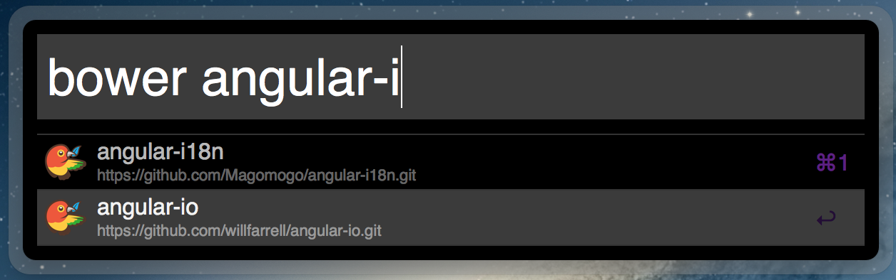
node.js: npm {query}
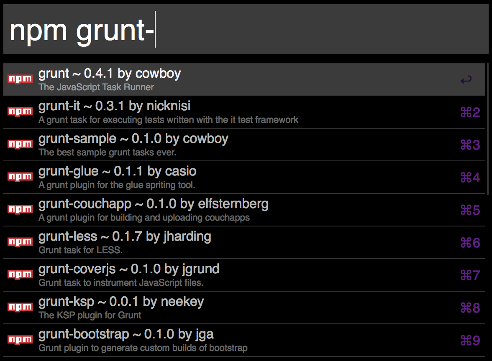
node.js task runner: grunt {query}
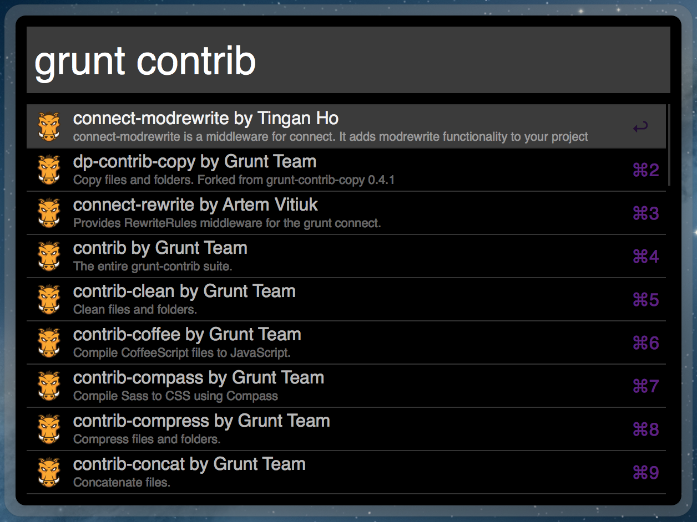
XCode: alcatraz {query}, cocoa {query}
CocoaPods can be upgraded to CocoaDocs by changing $apple_docs to true in the script.
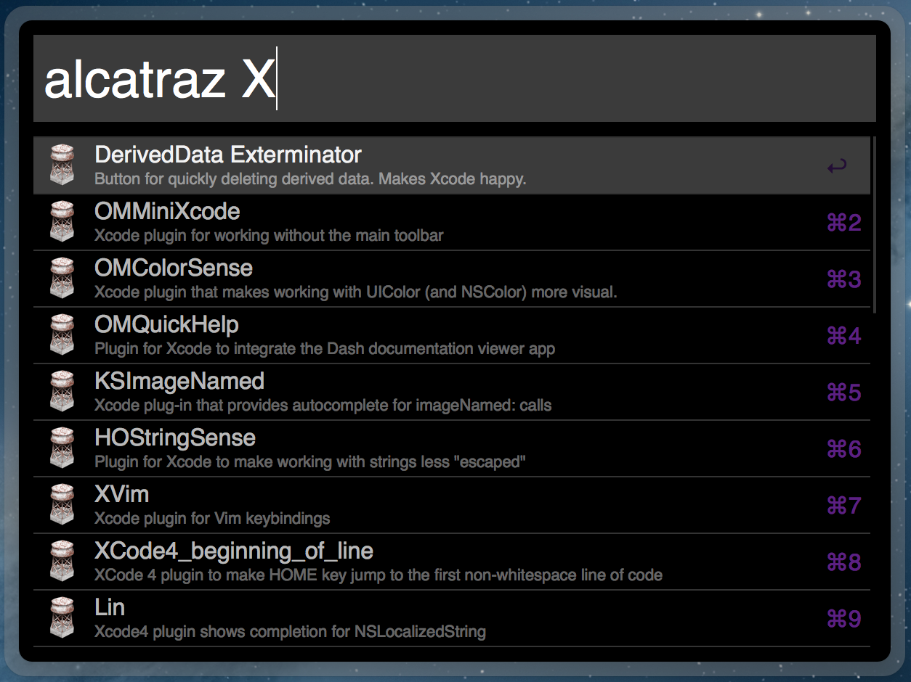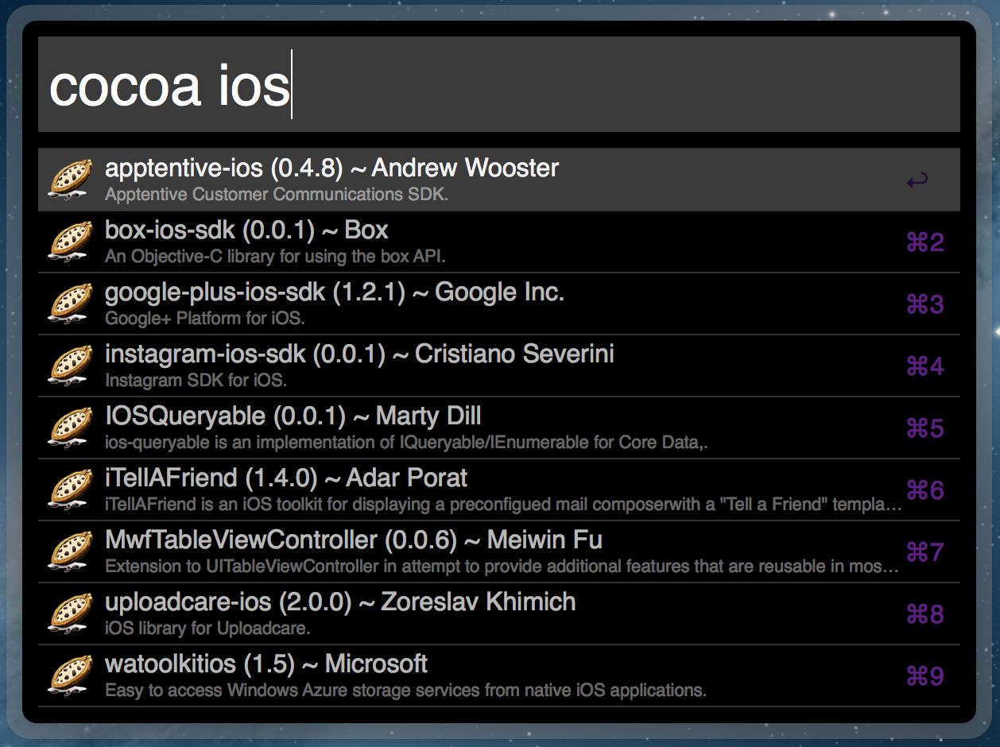
PHP: composer {query}, pear {query}
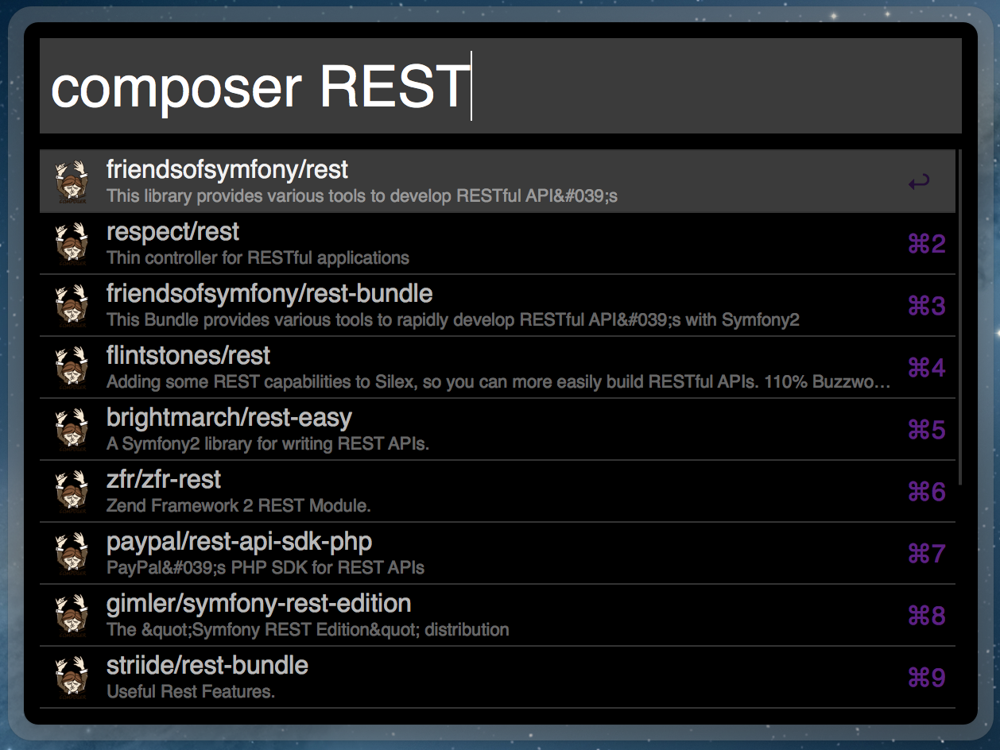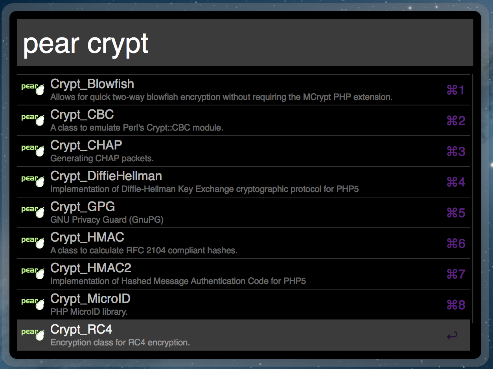
Python: pypi {query}
The Python Package Index is very slow due to a lack on API and pagaination. A min query length has been put in place to help speed this up. You can change it in the script, $min_query_length = 3. Perhaps someone with a python background can improve this.
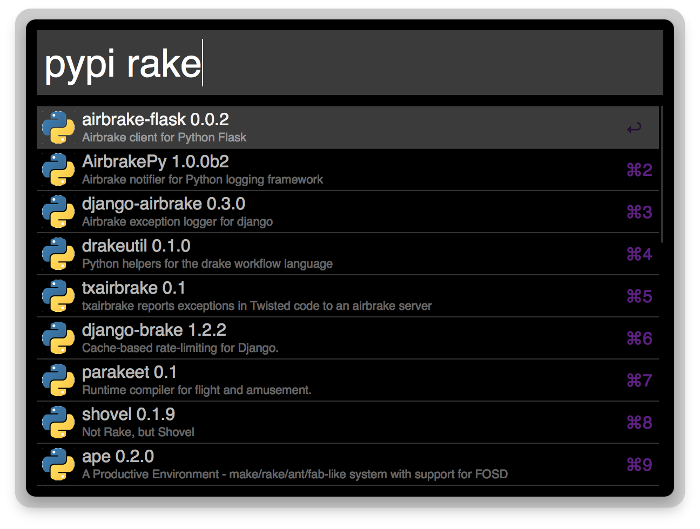
Ruby: gems {query}
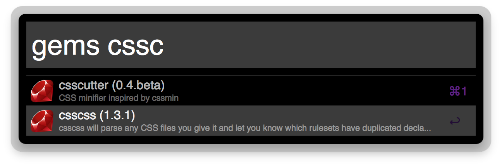
Java maven {query}
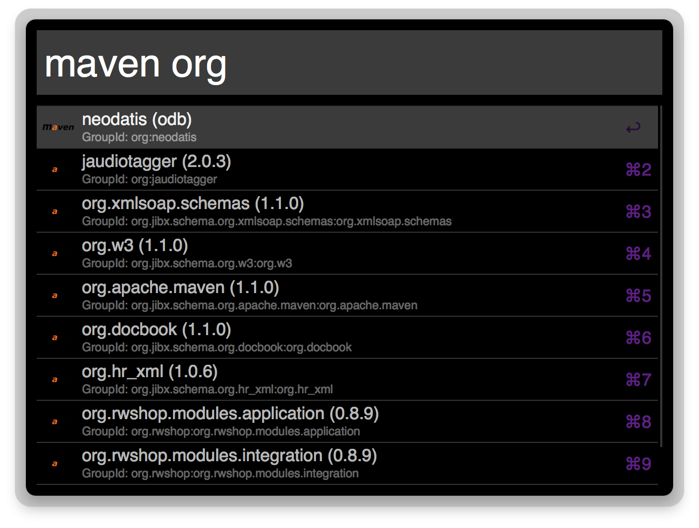
Mac OS X: brew {query} (aka homebrew)

Linux: rpm {query}
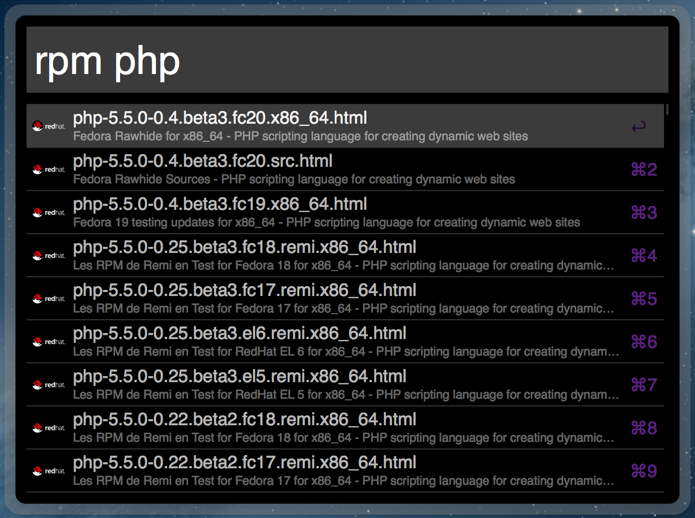
Dash (1.3) [Download]
Dash comes with default Alfred 2 Workflow. This is an extension to that by shortening the keyword filters for each language. Does not require online connection.
Commands Included: dash {query} (default), html {query}, css {query}, js {query}, jquery {query}, angularjs {query}, bootstrap {query}, svg {query}, nodejs {query}, php {query}, redis {query}, mysql {query}, cpp {query}, backbone {query}, underscore {query}, sass {query}, compass {query}, wordpress {query}, drupal {query}
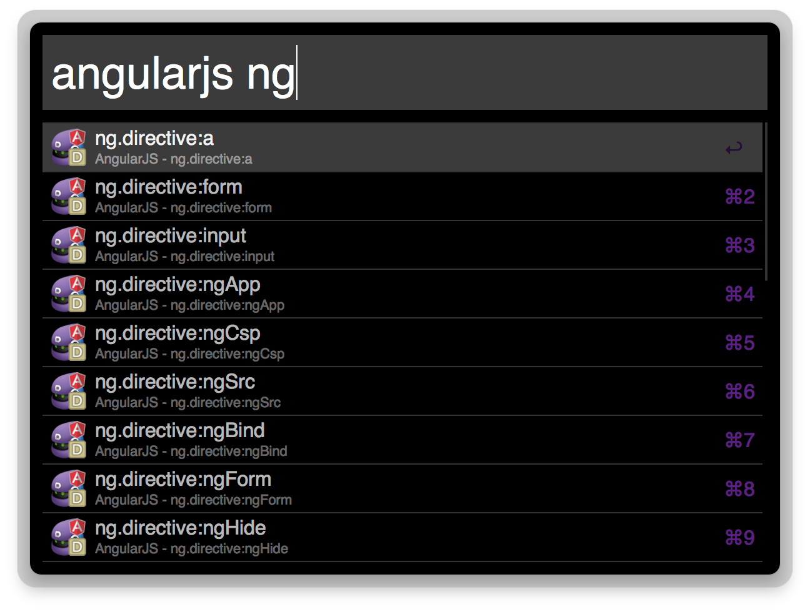
Dev Doctor (1.5) [Download]
Work just like the Dash Workflow, but requires a constant internet connection. A great alternative for those who don't own Dash.
StackOverflow (1.0) [Download]
st {query}
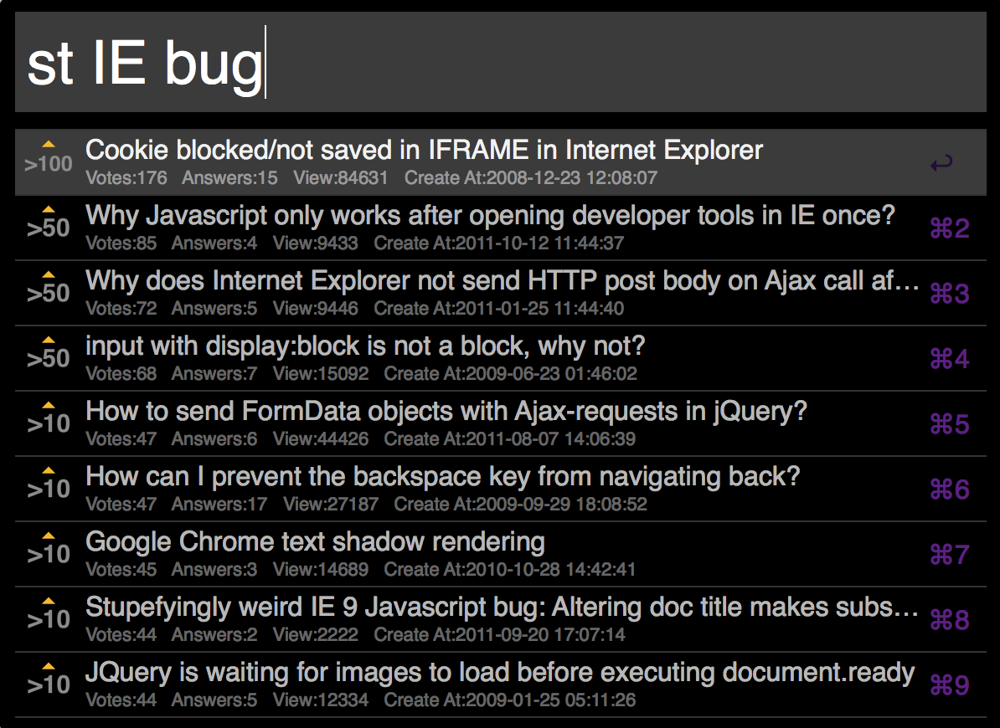
Jenkins (1.0) [Download]
jenkins {query}

Kill Process (1.2) [Download]
kill {query}

Encode/Decode (1.1) [Download]
Using the keywords encode {query} or decode {query}, will transform your query strings through base64, html, url, and utf-8 encode/decode. Pressing enter will copy the encoded/decoded string to the clipboard.

Colors (1.2) [Download]
Color convertions: c, hsl, rgb, #
VirtualBox (1.0) [Download]
Beanstalk (1.0) [Download]
Github (0.0)
Looking for one that includes secure authentication to allow for 5000 request/hour.
License
Pick your poison Apache Public License 2.0 / MIT / GNU General Public License v2.0 Copyright © 2013 will Farrell willfarrell.ca